CTF-MISC 杂项
1. MISC 杂项
1.1 文件的操作
1.1.1 文件类型识别
- file 命令 使用场景：不知道文件名，无法打开文件
- winhex 使用场景：windows下通过文件头信息判断文件类型
常见文件头、文件尾
| 文件格式 | 文件头 | 文件尾 |
|---|---|---|
| JPEG (jpg)文件头 | FFD8FF | FF D9 |
| PNG (png)文件头 | 89504E47 | AE 42 60 82 |
| GIF (gif) 文件头 | 47494638 | 00 3B |
| TIFF (tif)文件头 | 49492A00 | |
| XML (xml)文件头 | 3C3F786D6C | |
| HTML (html)文件头 | 68746D6C3E | |
| Adobe Acrobat (pdf)文件头 | 255044462D312E | |
| ZIP Archive (zip)文件头 | 504B0304 | 504B |
| TAR （tar.gz）文件头 | 1F8B0800 | |
| RAR Archive (rar)文件头 | 526172211A0700 C43D7B00400700 | C43D7B00400700 |
| Wave (wav)文件头 | 57415645 | |
| AVI (avi)，文件头 | 41564920 | |
| MS Word/Excel (xls.or.doc)文件头 | D0CF11E0 | |
| Adobe Photoshop (psd)文件头 | 38425053 | |
| Windows Bitmap (bmp) 文件头 | 424D |
1.1.2 文件分离
- binwalk 工具
用法：
- 分析文件
1 | sudo binwalk filename |
- 分离文件
1 | sudo binwalk -e filename |
- foremost 工具
如果 binwalk 无法正确 分离出文件，可以使用该工具
用法：
1 | sudo foremost 文件名 -o 输出文件夹 |
- dd
当文件自动分离出错或者因为其他原因无法自动分离时，可以使用 dd 实现文件手动分离
用法：
1 | sudo dd if=源文件 of=目标文件名 bs=1 skip=开始分离的字节数 |
参数说明：
1 | if=file #输入文件名，缺省为标准输入 |
方法二：可以尝试修改后缀名，但当隐藏了多种格式时可能会失败
1.1.3 文件合并
- Linux 下的文件合并
使用场景：linux 下，通常对文件名相似的文件要进行批量合并
格式：
1 | cat 文件名1 文件名2 文件名3 > 输出的文件 |
完整性检测：
1 | md5sum 文件名 |
- windows 下的文件合并
使用场景：windows 下，通常要对文件名相似的文件进行批量合并
格式：
1 | copy /B 合并的文件 输出的文件命令 |
完整性检测：
1 | certutil -hashfile 文件名 md5 |
1.2 图片隐写
补充：
首先使用 16进制编辑器 查看文件 或者使用 binwalk 有时 flag 会直接写在 里面
1.2.1 LSB 隐写
- zsteg 工具
使用：
1 | zsteg xxxx.jpg |
- wbstego4 工具
解密通过 lsb 加密的图片，bmp格式
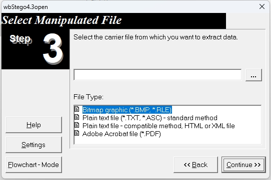
- stegsolve
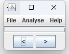
1.2.2 文件CRC校验出错
图片 CRC 计算
TweakPNG
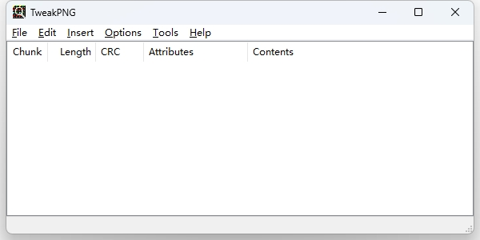
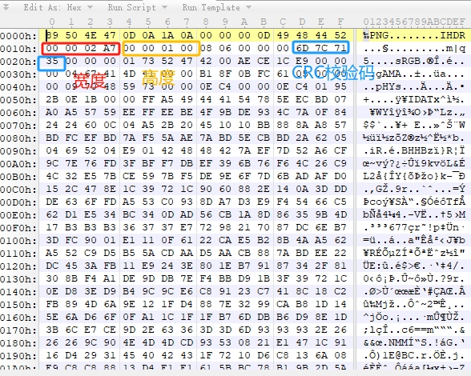
python -> 计算文件宽高
1 | import zlib |
使用方法：
1 | python 文件名.py -f 图片 |
1.2.3 Exif隐写
Exiftools
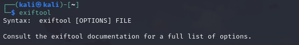
1.2.4 GIF 隐写
stegsole -> 需要 java 环境
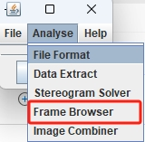
逐帧查看
1.2.5 bftools 工具
使用场景：在 windows 的 cmd 下，对加密过的图片文件进行解密
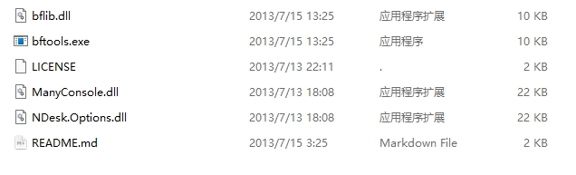
格式：
1 | bftools decode braincopter 要解密的图片名称 -out 输出文件名 |
1 | bftools run 上一步输出的文件名称 |
1.2.6 silenteye 工具
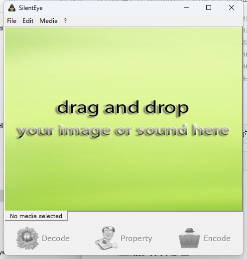
对音频或者图片解密
1.2.7 Stegdetect 工具探测加密方式
根据探测到的加密方式，选择对应的工具破解
常见加密 : steg, Jphide, outguess, invisible secretc, f5 appendx 和 camouflage
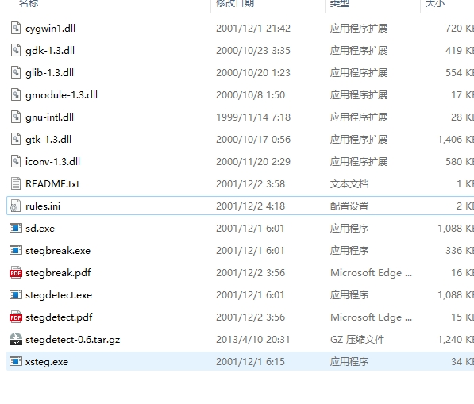
1 | stegdetect 文件名 |
1 | stegdetect -s 敏感度 文件名 |
1.2.8 outguess 工具
当 stegdetect 提示 outguess 加密时
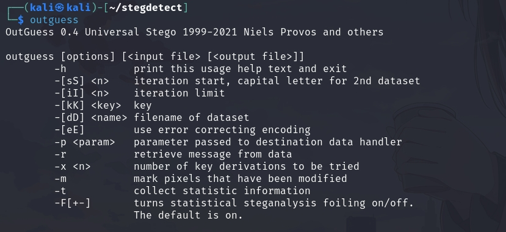
1 | outguess 要解密的文件名 输出结果文件名 |
1.2.9 JPhs 工具
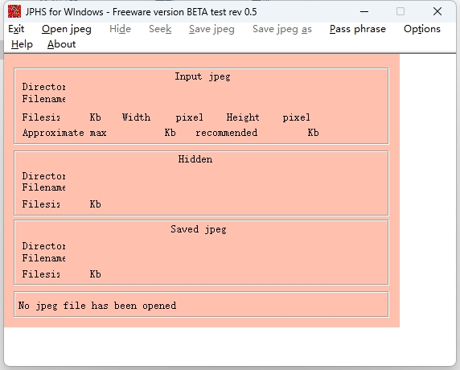
1.2.10 F5
使用场景，当 stegdetect 识别出来是F5 加密的图片
使用方法 ： 进入F5 -steganography_F5 目录 ,将 图片 拷贝 到给目录下
1 | java extact 要解密的文件名 -p 密码 |
1.2.11 CQR 二维码处理
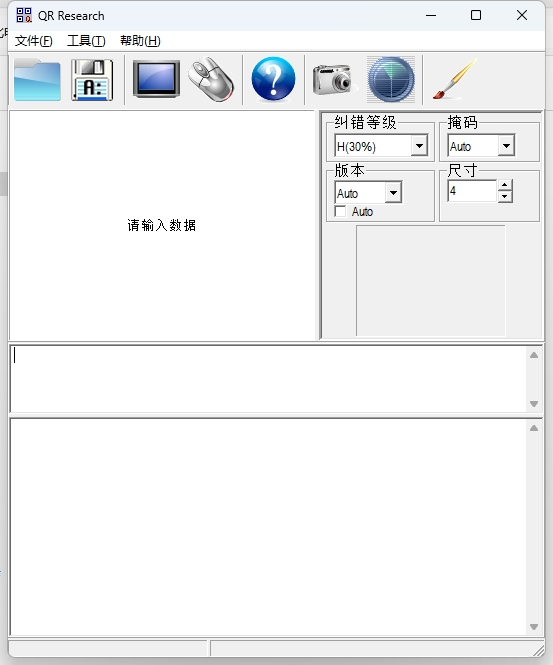
1.3 压缩文件处理
1.3.1 伪加密
如果压缩文件是加密的，或者文件头正常但是压缩错误，首先尝试问就按是否是伪加密。zip文件是否是加密，是通过标识符来显示的，在每个文件的文件目录字段有一位专门标识了文件是否加密，将其实设置为00表示该文件未加密，如果成功解压则文件为伪加密，如果解压出错说明文件为真加密，这时候就需要根据线索，或者使用工具来破解密码.
如果是真加密也不用担心，密码一般都不会太复杂，而且一般都会给出密码位数（在爆破工具中要选择位数），它主要考察有没有暴力破解的工具和技术
1.3.1.1 zip 伪加密
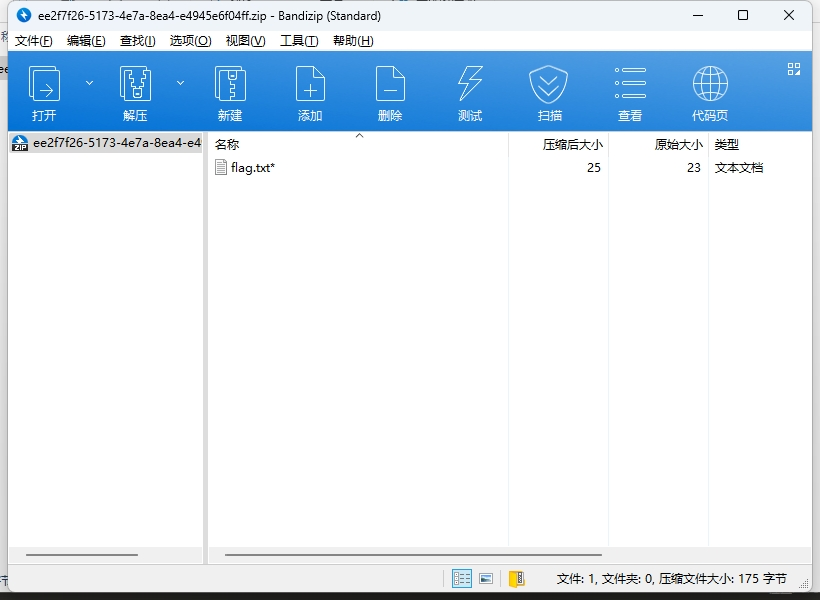
用 WinHex 或者 010editor 打开 文件 将 标识的两处 09 00 改成 00 00 保存文件
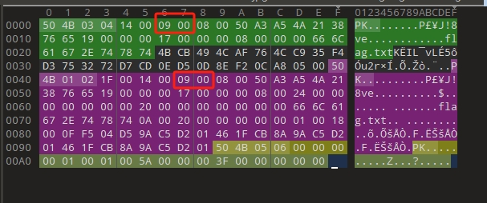
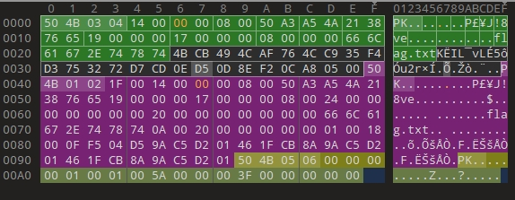
注：如果修改错误或者是真加密，文件名后面会有 星号 （ * ）或者打开错误
1.3.1.2 rar 伪加密
rar 文件由于有头部校验， 使用 伪加密时 打开文件会出现报错，使用winhex 修改标志位后如果报错消失且正常解压缩，说明是伪加密。使用winhex 打开rar 文件，找到第24个字节，该字节尾数为4 表示加密，0表示无加密，将尾数改为0即可破解伪加密
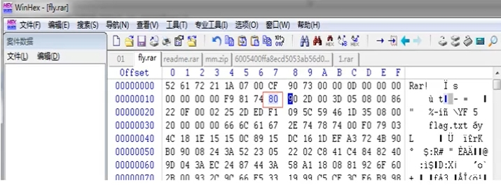
1.3.2 zip 密码破解
ziperello 工具
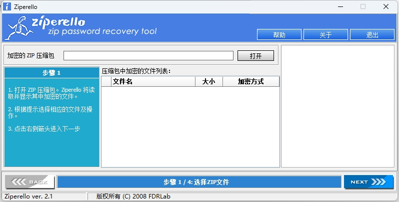
1.3.3 rar 密码破解
ARCHPR 工具
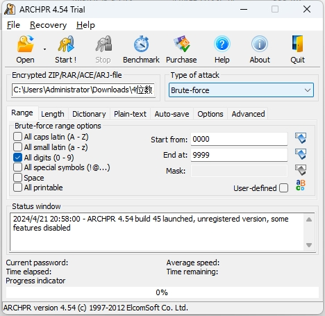
如果知道密码的一部分可以选择使用掩码
1.3.3.1 明文攻击
使用场景：已知加密的压缩文件中的铭文内容
例： 假设一个加密的压缩包中有两个文件 readme.txt 和 flag.txt，其中 flag.txt 的内容是我们希望知道的内容，而我们拥有readme.txt 的明文文件，使用上述两个文件可进行明文攻击
操作:
- 将readme.txt 文件进行压缩，编程readme1.rar
- 打开 ARCHAR ，攻击类型选择明文，明文文件路径选择readme1.rar（j将明文文件不加密压缩后的文件），加密的文件
- 选择要破解的文件，点击开始，破解成功
注意： 使用该方法需要注意两个关键点
- 有一个明文文件，压缩后CRC值与加密压缩包中的文件一致
- 明文文件的压缩算法需要与加密压缩文件的压缩算法一致
有时候不一定能破解出文件口令，但是能够找到加密密钥等信息，可以直接将文件解密，点解确定保存解密后的文件即可
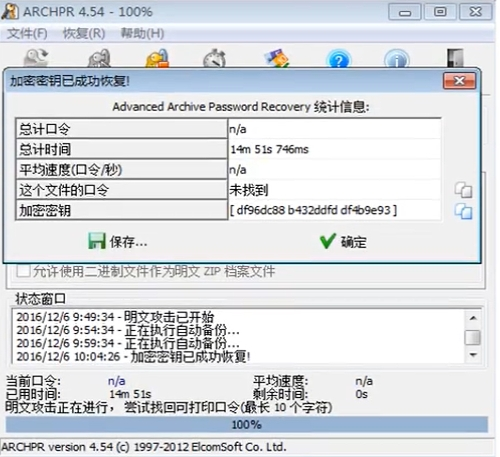
1.4 流量分析 wireshark
流量分析中常用协议
- TCP
- UDP
- HTTP
- TLS
- HTTPS
- USB
- DNS
- WIFI
- ICMP
- ARP
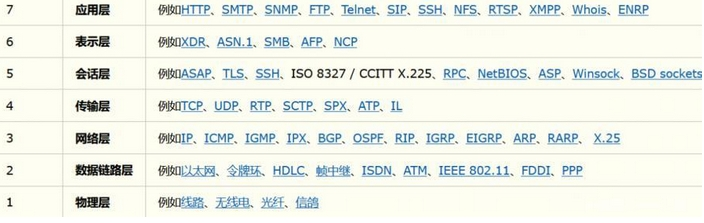
1.4.1 流量包修复
tshark
wireshark 的命令行版
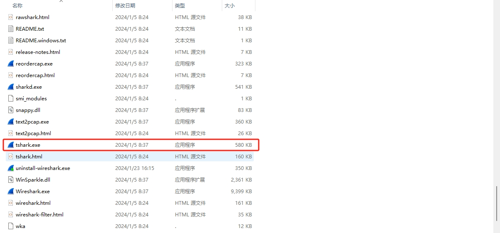
1.4.2 协议分析
1.4.3 数据提取
方法1：
过滤ip
1 | ip.src eq x.x.x.x or ip.dst eq x.x.x.x 或 ip.addr eq x.x.x.x |
过滤端口
1 | tcp.port eq 80 or udp.port eq 80 |
过滤协议
1 | tcp/udp/arp/icmp/http/ftp/dns/ip |
过滤mac
1 | eth.dst == A0:00:00:04:C:84 过滤目标mac地址 |
包长度过滤
1 | udp.length == 26 |
USB流量分析
1 | tshark -r usb1.pcap -T fields -e usb.capdata > usbdata.txt |
方法2：
- 使用 Github 上一个大佬写的工具
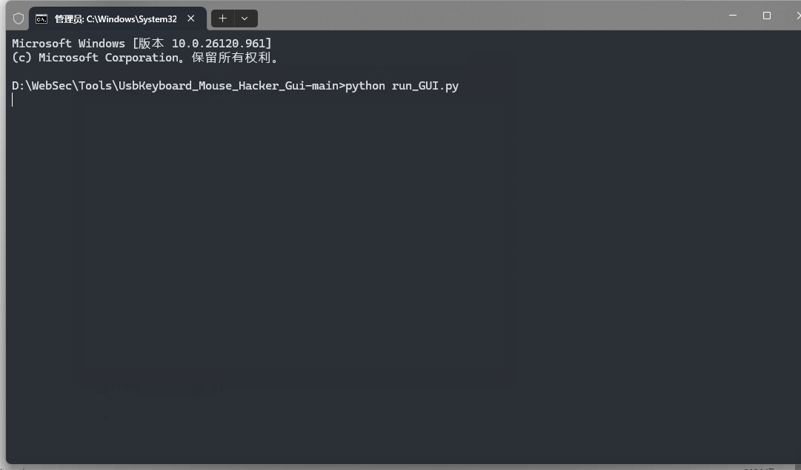
- 在终端输入
1 | python run_GUI.py //运行程序 |
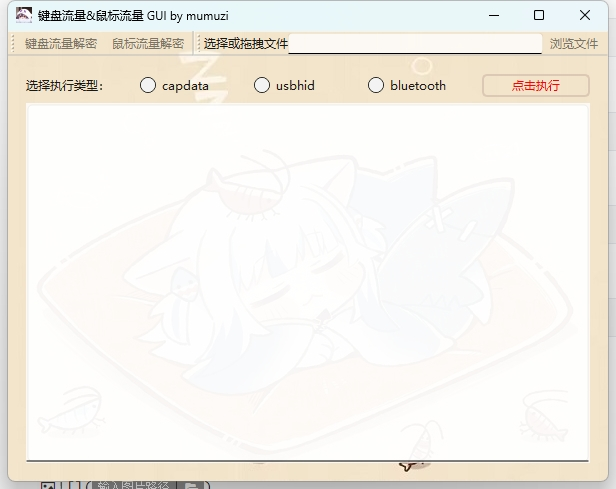
- 选择要提取的数据，选择键盘或者鼠标流量，将cap文件拖入程序中即可